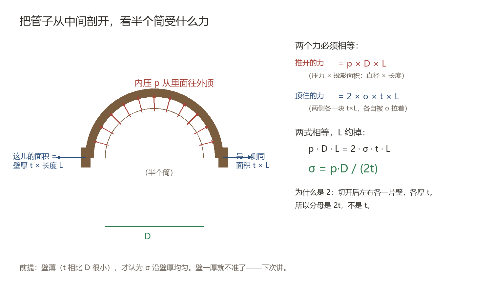

方法：把管子从中间剖成两半，看半个筒。
- 内压推开它的合力 = 压力 × 投影面积 = p · D · L
- 两片切口顶住它 = 2 × σ × (t × L)
- 两者相等，L 约掉 → σ = pD/(2t)

把管子剖成两半：推开的是 p×D×L，顶住的是 2×σ×t×L
为什么分母是 2t：切开后左右各一片壁，各厚 t。 投影面积不变：不管切多少角度，投影永远是 D × L。 D 越大应力越大：推力按 D 涨，抗力的面积也按 D 涨，净效果是应力随 D 线性增大。
前提：t 远小于 D（一般 t/D < 0.1）。壁厚了内外壁应力差就明显，要换拉梅公式。